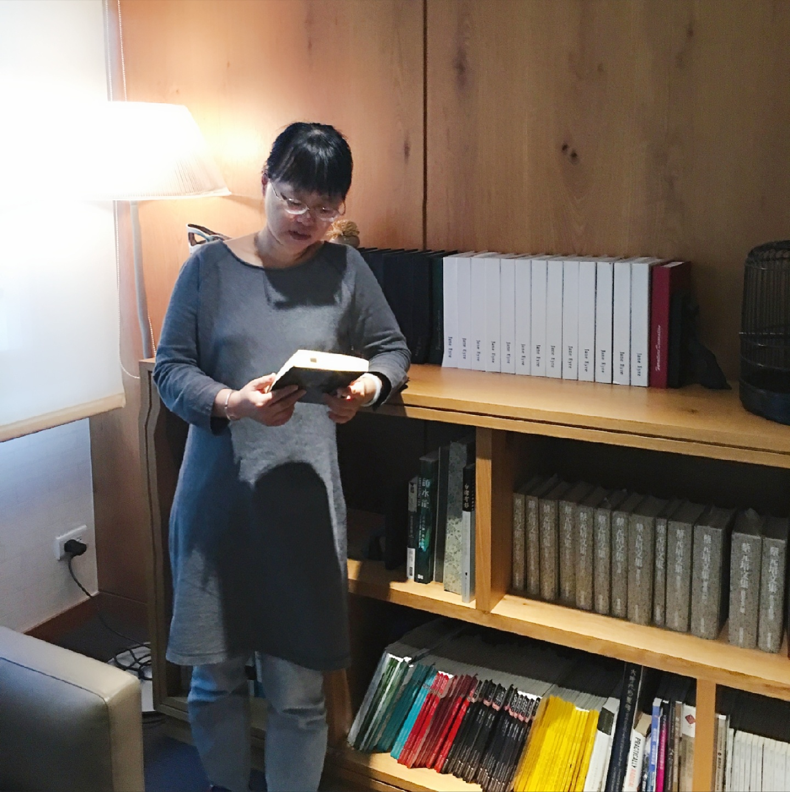

性别：女
导师类别：硕士导师
职称： 副教授
学位： 博士
毕业院校： 四川大学
新闻史
新闻学概论 新闻评论学 深度报道
1、辛亥时期岭南革命报刊社会动员研究 国家社会科学基金项目（项目编号：18BXW015） 2018.6.25 主持 20万
2、晚清岭南报刊与革命舆论建构 中国博士后基金特别资助项目（项目编号：2017T100659） 2017.6 主持 15万
3、报刊与晚清岭南公共空间建构（1900-1911） 中国博士后基金面上项目（项目编号：2015 M582478） 2015．11.5 主持 5万
4、体育文化传播的微博话语体系建构与媒介环境研究 广东省教育厅创新强校（项目编号：2014WTSCX072） 2014.10主持 5万
5、晚清广州报人研究 《广州大典》与广州历史文化研究专项（项目编号：2016GZY23） 2016.4 主持 5万
6、多卷本《中国报刊阅读史》 国家社科基金重大项目（项目编号：16ZDA222） 2016.11 主要参与者
论文:
1、新女性与旧道德——晚清女学与舆论纷争 新闻与传播研究（一类A） 2017（1）
2、操衣：晚清中国的衣冠期待——以晚清画报中的学生操衣形象为中心 现代传播（一类B） 2019（1）
3、清末岭南报刊革命舆论影响路径 中国出版（cssci）2018（11）
4、启蒙使命推动下的清季岭南报刊俗化 中国出版（cssci）2015（9）
5、体育俱乐部微博营销方式及对策研究 体育文化导刊（cssci）2013（12）
6、微博管理与体育明星形象营销 体育文化导刊（cssci）2013（8）
7、《香港少年报》中岭南末世救赎管窥 广州大学学报（cssci扩展版） 2016（2）
8、清末岭南阅报活动与社会思潮 高校图书馆工作（cssci扩展版）2018（1）
9、报人的时代际遇与使命——叶楚伧早年汕头办报略述 传媒观察2019（11）
10、政党、机关报与公共空间——《知新报》舆论宣传的历史意义传媒观察 2018（5）
11、新媒介视野下的体育文化传播建构 新闻知识2016（6）
12、新媒介视域下的媒介偏见 传媒观察2015（4）
13、陌生化理论视阈下的文化综艺节目创新 传媒观察2015（3）
2019．8-2020．2 台湾世新大学访问学者
广州大学粤港澳传媒研究中心
地址：广州市番禺区大学城外环西路230号
邮编：510006
Copyright © 2020 版权所有